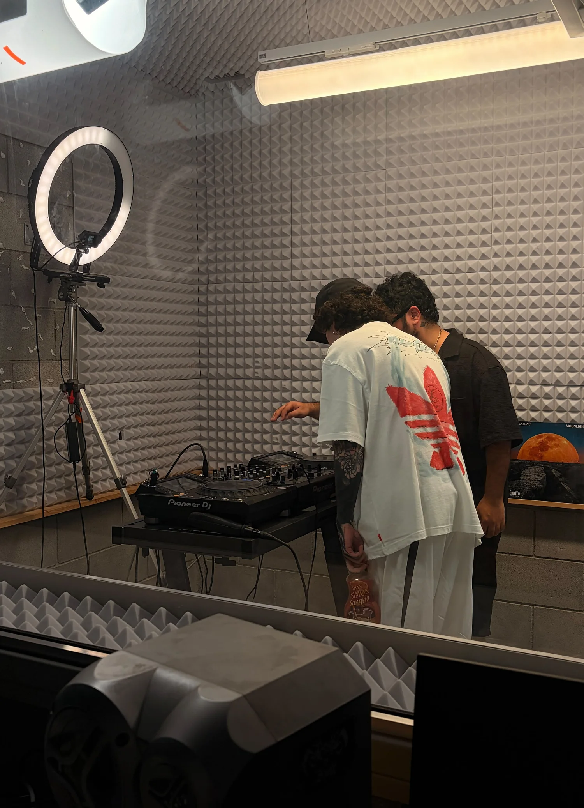
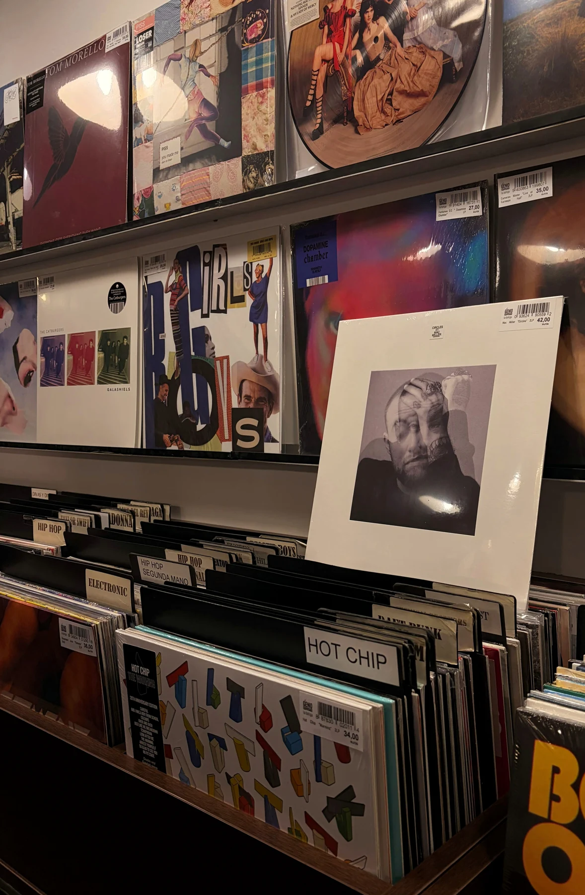
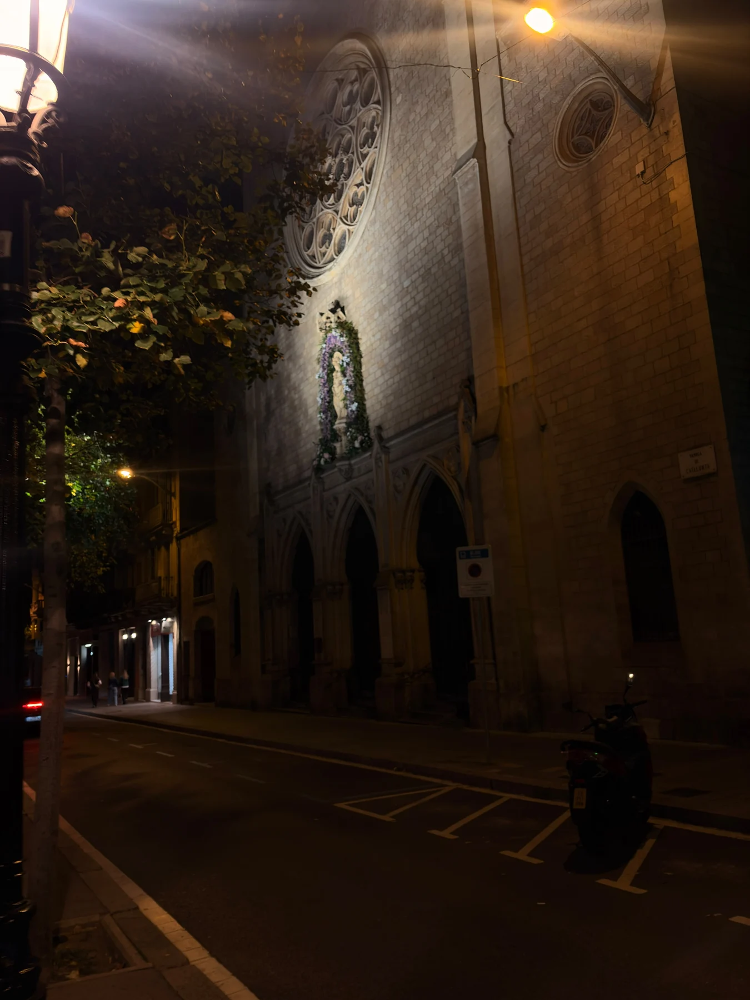

Journal / 1 de noviembre de 2026
Vanta Radio, Vol. 1
Unos días en Barcelona con @weloveurban acabaron dentro de una grabación en Vanta Radio. Una sesión, vinilos y una pregunta: ¿por qué amas?

Fui a Barcelona a pasar unos días con urban. Ciudad, playa, una tienda de vinilos. Y el domingo 1 de noviembre, Vanta Radio: la Vol. 1 de Mi Compa el Chino, una Hybrid DJ Session con ARRE Productions. Artista underground mexicano en ascenso, con 1,4 millones de oyentes mensuales en Spotify, se encontraba de gira por Barcelona, Madrid y París.


Fui a Barcelona a pasar unos días con urban. Ciudad, playa, una tienda de vinilos. Y el domingo 1 de noviembre, Vanta Radio: la Vol. 1 de Mi Compa el Chino, una Hybrid DJ Session con ARRE Productions. Artista underground mexicano en ascenso, con 1,4 millones de oyentes mensuales en Spotify, se encontraba de gira por Barcelona, Madrid y París.
Participamos como invitados en la grabación. Nos recibió el creador del proyecto y conocí al equipo, al artista y a su productor. Hablamos con ellos dentro de la sesión, que saldrá en YouTube e Instagram; tras ello, compartimos conversaciones e ideas en una taberna andaluza.
En la sala había vinilos. Uno era Taifa Yallah, el álter ego con el que Dellafuente se escondió de su propio nombre para hacer rock flamenco, uno más de los sonidos que ha explorado. Justo antes de entrar habíamos hablado de él.
Con urban ideé preguntas para un nuevo formato de entrevistas. La mía: ¿por qué amas?
Su tema «u» empieza y termina con dos audios. En ellos habla de que el verdadero éxito es compartir libertad con quienes amas. Se notaba dentro y fuera de la sala: el éxito sabe mejor cuando es de todos.
— varix.
(Adrián)
Continúa leyendo, o viendo, o escuchando…
Y sigue explorando en @weloveurban.